12.02.2025
Die letzten Tage habe ich an den Örtlichkeiten in Jütland weitere Änderungen / Verbesserungen vorgenommen. Dazu kann ich noch einmal auf die Luftfotos von Skråfoto - Lizenz: CC BY 4.0 - zurückkommen. Skråfoto ist eine Webanwendung, die von der Dänische Agentur für Datenversorgung und Infrastruktur weltweit kostenlos bereitgestellt wird.
Seit 2017 werden von ganz Dänemark alle 2 Jahre Luftaufnahmen aus Flugzeugen gemacht. Die Flugzeuge wurden mit Kameras ausgestattet, die fünf Bilder aufnehmen können: ein vertikales Bild und ein schräges Bild aus jeder Himmelsrichtung. Bei den für die Aufnahmen verwendeten Kameras handelt es sich um Mappingkameras mit stabiler Geometrie. Durch die Entscheidung für den Einsatz von Kartierungskameras können die Bilder für Vermessungs- und Kartierungszwecke verwendet werden. Als Ergänzung zu den präzisen Kameras kam bei der Aufnahme der Bilder moderne Positions- und Orientierungshardware zum Einsatz, die mit GPS und Laser-Gyroskopen eine hochpräzise Ortung und Orientierung der Bilder ermöglicht. Dies bedeutet, dass Sie auf den heutigen Bildern ohne Nachberechnung Objekte im Gelände besser als auf 2 Meter erkennen können.
Insgesamt hat die dänische
Klimadatenagentur aufgeteilt auf die ersten drei Jahre - 2017, 2019 und
2021 - der Schrägluftfotos mehr als 4.200.000 Rohbilder gesammelt, die mehr
als 1,1 Milliarden JPG-Dateien zur Verteilung ergeben haben.
Wer
alle Bilder sehen möchte, muss 357 Jahre einplanen, hat dann aber für jedes Bild
nur 10 Sekunden Zeit. Dazu kommen inzwischen noch die Aufnahmen aus dem
Jahr 2023 und in diesem Jahr 2025 stehen
bereits schon wieder neue Aufnahmen an.
Beispielhaft hier ein Luftfoto vom 17.04.2023 von der Kirche in Gunderup. Es gibt zumindest für Dänemark überhaupt nichts vergleichbares - siehe dazu z.B. Google Maps - insbesondere durch deren Schrägaufnahmen, da alle anderen nur Senkrechtaufnahmen haben.
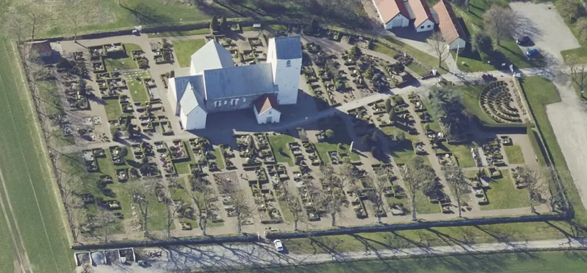
11.02.2025
Auf Anfrage bekam ich heute vom Antikvarisk -Topografisk Arkiv, das dem Nationalmuseum in Kopenhagen angeschlossen ist, einen Scan des Originalschreibens von Pfarrer Nicolai Holst (*04.09.1756 - 13.07.1841), das dort verwahrt wird, zugemailt - Tusind tak Danial!
Holst war damals der Gemeindepfarrer für die Kirche Skibsted und für die Kirche Lyngby - die ca. 3 km auseinander liegen. In dem Schreiben führt er weitere Denkmäler in seiner Region auf, bevor er am Ende im letzten Absatz unter "e)" schreibt:
"I Lyngbye Kirkegaards Muur findes indsat en aflang opreist Steen hvoraf begge Ender med de derpaa staaende Runer er afbrudt. - Paa bemælte Steen findes undertegnede næsten udslidte Runer."
Übersetzung: "In der Einfriedungsmauer des Friedhofs von Lyngby befindet sich ein länglicher, aufrecht stehender Stein, dessen beide Enden mit den darauf eingravierten Runen abgebrochen sind. Auf dem Stein erkennt der Unterzeichner fast abgenutzte Runen."

Er unterschreibt rechts unten mit:
N: HolstSogne-Præst for oven-
mælte Meenigheder.
Übersetzung: Gemeindepfarrer für die oben genannten Gemeinden.
10.02.2025
Die letzten Tage haben ich einige kleinere Verbesserungen / Aktualisierungen im Bereich Jütland vorgenommen. Heute konnte ich z.B. zu Jütland - 24 - Jetsmark die Historie zu dem Entdecker des Runensteins weiter aufhellen. Im Jahr 1855 trat der Runenstein bei Grabungen durch den Besitzer Mads Ottesen (*13.11.1817 - 01.12.1891)
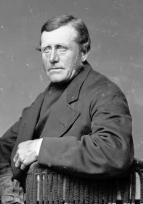
Bildquelle: arkiv.dk / Aalborg Stadsarkiv - Lizenz: Urheberrechtlich geschützt - Erlaubnis auf Anfrage erteilt - 10.02.2025auf dem Hof Bisgård in Pandrup zu Tage. Über die Verlinkungen zu seinem Geburts- / Sterbedatum kommt man auf die originalen Einträge im "Kontraministerialbog". Das waren die Kirchenbücher in denen die Geburten, Sterbefälle usw. in der Gemeinde vom Pfarrer / Lehrer dokumentiert wurden. Diese sind heutzutage in digitalisierter Form beim Rigsarkivet online abrufbar. Außerdem konnte ich zu der Person Stud. theol. Nicolaj Christian Christensen aus Aaby (*26.07.1833 - 11.07.1903) seine Personalien ermitteln. Beim örtlichen Archiv habe ich zu einem Foto / Bildnis von ihm angefragt, vielleicht klappt das ja.
09.02.2025
Ich habe heute innerhalb von Jütland zu einzelnen Kirchen ein Luftfoto / Skråfoto - jeweils Lizenz: CC BY 4.0 - eingefügt. Dabei fiel mir bei 28 - Gunderup auf, dass ich aus den Aufzeichnungen "Nørrejyllands Mærkværdigheder i det 19. Aarhundrede - Hs. Bd 1-2 (med) Tillæg 1-2" von Rasmus Henrik Kruse (*07.08.1796 - 30.05.1877, Landschaftsmaler und Antiquar), die heute im Nationalmuseum in Kopenhagen, Antikvarisk-Topografisk Arkiv, aufbewahrt werden, noch etwas nachtragen musste, was nunmehr erledigt ist.
30./31.01.2025
Am 29.01.2025 ging eine tolle Nachricht mit der Titelzeile "Lost Place der Geschichte wiedergefunden. Auf Bayeux Teppich dargestellter königlicher Wohnort liegt in England" um die Welt. So heißt es dazu z.B. bei www.scinexx.de:
Lokalisiert: Lange war unklar, wo der letzte angelsächsische König Englands residierte. Eine Spur lieferte zwar eines der berühmtesten Kunstwerke des Mittelalters der Wandteppich von Bayeux. Auf ihm ist König Harold im Festsaal seines Hauses und in einer Kirche dargestellt. Aber erst der Abgleich mit archäologischen Funden erlaubte es nun, diese Residenz eindeutig im südenglischen Dorf Bosham zu lokalisieren. Mit den dortigen Relikten haben die Archäologen ein seltenes Musterhaus der angelsächsischen Aristokratie gefunden.
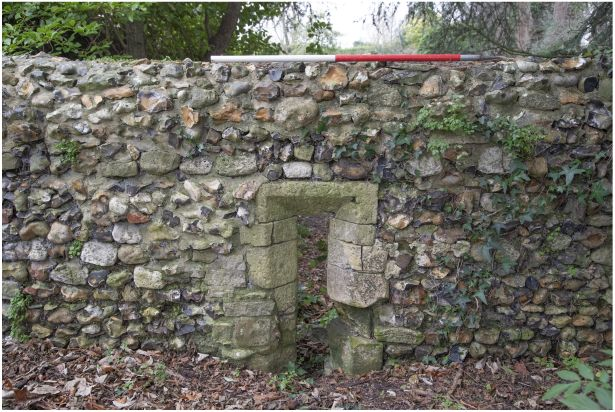
Bildquelle: Der u. a. Fachartikel - Lizenz: CC BY 4.0Fachartikel im Internet: "Where Power Lies: Lordly Power Centres in the English Landscape c. 8001200" - The Antiquaries Journal , Volume 104 , October 2024 , pp. 72 - 106 - DOI: https://doi.org/10.1017/S0003581524000350 - Lizenz: CC BY 4.0
Über meine Recherchen zu der Entdeckung stieß ich im Internet auf etliche interessante Informationen zum Teppich von Bayeux.
1816 wurde der historische Zeichner der Society of Antiquaries in London, Charles Alfred Stothard (*05.07.1786 - 28.05.1821, englischer Maler und Antiquar),
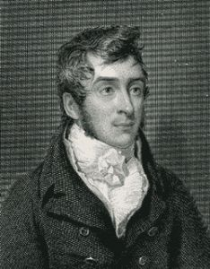
Bildquelle: Wikipedia - Lizenz: Public Domainbeauftragt, den gesamten Teppich von Bayeux zu kopieren. Die Zeichnungen von seinem ersten Besuch in Frankreich wurden von James Basire (*06.10.1730 - 06.09.1802, Graveur)
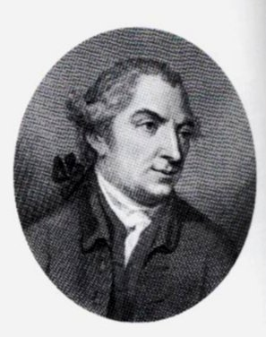
Bildquelle: Wikipedia - Lizenz: CC BY-SA 4.0gestochen. Stothard nahm diese Stiche bei einem späteren Besuch in Bayeux mit und kolorierte sie vor Ort anhand des Originalwerks von Hand. Diese wurden zwischen 1821 und 1823 in Vetusta Monumenta (Volume 6, Tafeln 1-17) veröffentlicht das erste Mal, dass eine vollständige Farbreproduktion des Teppichs der Öffentlichkeit zugänglich gemacht wurde. Stothard Arbeit ist auch deshalb von Bedeutung, weil sie die erste Aufzeichnung des Teppichs von Bayeux ist, nachdem er während der Französischen Revolution beschädigt wurde und bevor im 19. Jahrhundert Reparaturen durchgeführt wurden. Indem er mit Hinweisen von erhaltenen Fäden und Farben arbeitet, stellt er Teile fehlender Stickereien wieder her und enthüllt Szenen, die durch Beschädigungen verloren gegangen sind. Die Gesellschaft besitzt sowohl die originalen kolorierten Stiche als auch die veröffentlichten Tafeln. Daraus die beiden relevanten Darstellungen zu dem o.a. Fundkomplex aus The tapestry of Bayeux - Stothard, C. A. - 1823 bei archive.org.
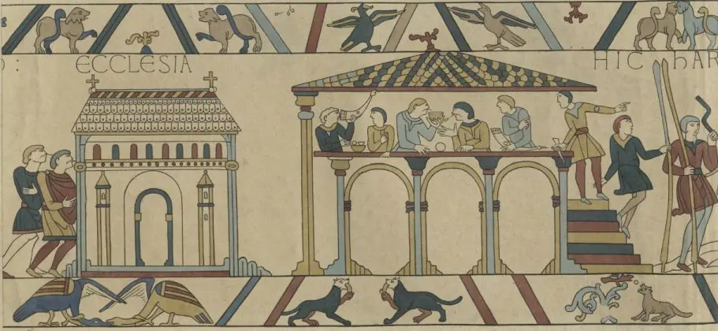
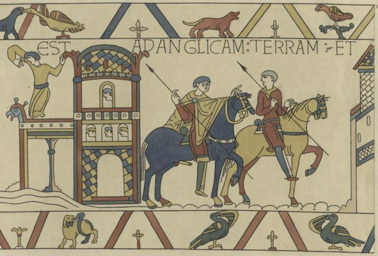
Harold Godwinson in Bosham. Harold ist zu sehen, wie er die Kirche besucht und im oberen Stockwerk einer Halle feiert, bevor er mit dem Schiff in die Normandie aufbricht. Später auf dem Teppich ist Bosham wahrscheinlich wieder abgebildet, als Harold von seiner Reise zurückkehrt.
Über den Ursprung des Teppichs ist nichts Genaues bekannt. Die erste schriftliche Erwähnung des Teppichs von Bayeux stammt aus dem Jahr 1476, als er in der Schatzkammer der Kathedrale von Bayeux als ein sehr langer und schmaler Wandteppich mit gestickten Figuren und Inschriften, die die Eroberung Englands darstellen verzeichnet wurde.
Das Original des Teppichs von Bayeux kann heutzutage natürlich auch als digitale Version online angeschaut werden - Quellenangabe: Official digital representation of the Bayeux Tapestry 11th century. Credits: City of Bayeux, DRAC Normandie, University of Caen Normandie, CNRS, Ensicaen, Photos: 2017 La Fabrique de patrimoines en Normandie. Das Original ist nur noch bis zum 31. August 2025 im Museum in Bayeux zu sehen - Werbevideo auf YouTube. Wegen anstehender Modernisierungsgsarbeiten wird das Museum des Teppichs von Bayeux vom 01.09.2025 bis voraussichtlich Oktober 2027 geschlossen sein! Das Museum und die Präsentation des Teppichs von Bayeux werden während diesem Zeitraum überarbeitet - was den Besucher dann erwartet wird hier schon einmal angerissen.
Tatsächlich ist im dortigen Museum seit dem 18.05.2024 bis zum 18.05.2025 der Teppich von Bayeux in einem besonderem Format zu sehen. Maison PIXI, bekannt für seine handbemalten Metallfiguren, die in der Tradition der Bleifiguren stehen und von der Welt der Comics inspiriert sind, hat sich der Herausforderung gestellt, den gesamten Teppich von Bayeux in PIXI-Figuren darzustellen. Das Projekt zielt darauf ab, die berühmte mittelalterliche Stickerei dreidimensional - mit tausend kleinen Figuren und über dreißig Meter Länge - darzustellen und ihre Muster und Farben aus einem neuen Blickwinkel zu studieren. Die TaPIXIe-Ausstellung in Bayeux gewährt einen umfassenden Rundgang durch die Geschichte und das Universum von PIXI und ermöglicht es der Öffentlichkeit, die ersten zehn Meter dieser beispiellosen Errungenschaft zu besichtigen.
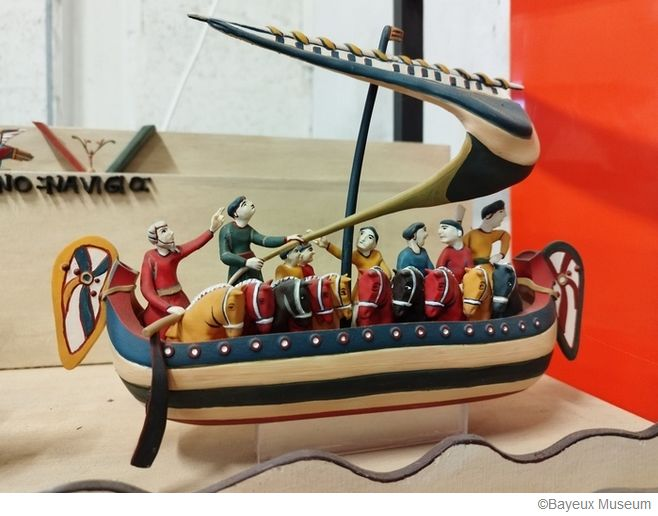
Das gesamte Projekt soll 2027 abgeschlossen sein, rechtzeitig zur Feier des tausendjährigen Jubiläums der Geburt von Wilhelm von der Normandie.
Das Museum - < über den Link kann man auch ein Bild von dem Objekt sehen - in Bayeux konnte offenbar schon im September 2023 aus dem Nachlass von Charlie Watts - Schlagzeuger der The Rolling Stones - eine fotografische Kopie des Teppichs von Bayeux über eine Hammerauktion bei "Christie's" für 16.000 £ (ca. 19.150 ) ersteigern. Dazu heißt es: "Dieses lebensgroße Bild einer Stickerei aus dem 11. Jahrhundert wurde 1874 nach der ersten Fotokampagne des Werks angefertigt, die 2 Jahre zuvor vom South Kensington Museum (heute Victoria & Albert Museum) durchgeführt wurde. Diese Reproduktion im Maßstab 1:1 wird auf zwei originalen Eichenträgern mit einer Höhe von 140 cm präsentiert, auf denen das Bild platziert ist. Unseres Wissens wurden damals von der Firma Arundel (spezialisiert auf die Reproduktion mittelalterlicher Kunst), zu der auch diese Kopie gehört, nur 6 Abzüge im Maßstab 1:1 aus dieser Fotokampagne angefertigt. Eine weitere solche Kopie wird derzeit vom V&A in London aufbewahrt. Eine zweite Kopie ist einer anonymen walisischen Person zugeordnet. Sie wurden alle von der National Art Training School in London (heute Royal College of Art) in Bayeux von Hand gesammelt, um eine maximale Wiedergabetreue zu gewährleisten, fügt Antoine Verney, Chefkurator der Bayeux-Museen, hinzu. Das Victoria & Albert Museum besitzt noch immer die Glasplatten aus der Fotokampagne von 1872. Als Partner des Bayeux-Museums seit 2022 zur Verbesserung der Kenntnisse über den Wandteppich erkannte er den Zustand der viktorianischen Replik vor ihrer Versteigerung. Die Londoner Institution hält es für das längste fotografische Panorama des 19. Jahrhunderts und es hat maßgeblich dazu beigetragen, das Bild des Teppichs von Bayeux in der ganzen Welt bekannt zu machen. Das Objekt wurde auf mehreren Weltausstellungen präsentiert darunter 1893 (Chicago, Womens Building). Es ist ein einzigartiges Objekt von beeindruckender Größe, dessen Herkunft und Verlauf uns nicht gleichgültig lassen konnten. Wir beschlossen, diese Auktionen aufmerksam zu verfolgen, auch wenn wir wenig Hoffnung hatten, es erwerben zu können, da wir dachten, der Preis würde in die Höhe schnellen. Am Ende ging das 14. und letzte Gebot an das Museum! Diese Akquisition ist ein wahrer Schatz an Kulturerbe, den wir im zukünftigen Museum ausstellen möchten, um ihn nach 150 Jahren der Trennung zu seiner Entstehungsquelle zurückzuführen, kommentiert Loïc Jamin, stellvertretender Bürgermeister, zuständig für Museen, Tourismus, Attraktivität und Aufwertung des Kulturerbes."
Dann gibt es im Reading Museum in der englischen Grafschaft Berkshire noch eine Kopie des Teppichs von Bayeux die man sich heutzutage online anschauen kann. Elizabeth Wardle hatte die Idee, eine Replik des Teppichs von Bayeux anzufertigen, die heute im Reading Museum ausgestellt ist. Sie war eine begabte Stickerin und Mitglied der Leek Embroidery Society in Staffordshire. Ihr Ehemann Thomas Wardle war ein führender Seidenindustrieller. Elizabeth Wardle erforschte den Teppich von Bayeux, indem sie Bayeux 1885 besuchte. Die Gesellschaft stützte die Replik auch auf handkolorierte Fotografien des Teppichs, die sich im South Kensington Museum befinden, heute Victoria & Albert Museum, London. Ziel des Projekts war es, eine originalgetreue Replik des Teppichs von Bayeux anzufertigen, damit England eine eigene Kopie hat. Dieses ehrgeizige Projekt wurde in etwas mehr als einem Jahr von 35 begabten viktorianischen Stickerinnen abgeschlossen. Neben Mitgliedern aus Leek nahmen auch Frauen aus Derbyshire, Birmingham, Macclesfield und London teil. Jede Stickerin stickte ihren Namen unter ihr fertiges Paneel. Mit einer Länge von mehr als siebzig Metern enthalten sowohl der Originalteppich von Bayeux als auch diese viktorianische Nachbildung erstaunlich viele Details, darunter fein gestickte Darstellungen von: 626 menschlichen Figuren - 190 Pferden - 35 Hunden - 506 Vögeln und Tieren - 33 Gebäuden - 37 Schiffen - 37 Bäumen oder Baumgruppen und 57 lateinischen Inschriften.
29.01.2025
Ich habe heute über meinen Webhoster IONOS für diese Webseite "www.wikinger-in-daenemark.de" auf dem Webserver ein SSL Zertifikat installiert und aktiviert. Nun wird beim Aufruf meiner Startseite das Sicherheitsschloss und das https-Protokoll ausgeführt. Dies ermöglicht es meinen Besuchern sichere Verbindungen von meinem Webserver zu ihrem Browser aufzubauen. Zuletzt habe ich nämlich Rückmeldungen erhalten, dass ihnen ein Zugriff über mein bisheriges, unsicheres http-Protokoll, von ihrem System her nicht erlaubt wurde.
Da ich kein IT-ler bin und mich da meist alleine durchwurschteln muss, ist das alles nicht so einfach. Beim Browser "Microsoft Edge" hat es sofort geklappt. Beim Browser "Firefox" musste ich erst unter "Einstellungen/Datenschutz & Sicherheit" unter "Sicherheit" den Haken auf "Nur-HTTPS-Modus in allen Fenstern aktivieren" setzen, da es sonst nicht funktioniert hat. Bei meinem iPhone und bei meinem iPad mit dem Browser "Safari" habe ich dagegen noch nicht herausgefunden, welche Einstellung die https Anzeige verhindert. Zahlreiche Google Recherchen haben da noch keine Lösung vorgeschlagen. Also habe ich bei meinen beiden Apple Geräten einfach mal meinen unter Favoriten abgelegten Link zu meiner Wikinger Webseite um das "s" ergänzt, worüber mir jetzt immer die https Version angezeigt wird. Aber das hilft euch ja nicht weiter.
Wenn die Seite bei euch also nicht als sicheres https-Protokoll angezeigt wird, liegt es vermutlich an euren Browsereinstellungen.
Ich konnte über die Sucherei in meinem Webhosting Menü immerhin erstmals herauslesen, dass 45 % der Anfragen auf meine Webseite aus dem Ausland ausgeführt werden. Im Performance Level (3) heißt es dort: "Glückwunsch, ihe Websites reagieren mit hoher Geschwindigkeit auf alle Anfragen ihrer Besucher." Das freut mich doch!
29.01.2025
Innerhalb von Jütland bin ich dabei die Lizenzbedingungen von Skråfoto - Lizenz: CC BY 4.0 - zu aktualisieren. Außerdem habe ich zu Jütland - 20 - Sjørring Vold Ergänzungen vorgenommen. Dort findet sich jetzt u.a. auch diese zeichnerische Darstellung der Wall-/Burganlage, die ich vor Ort von einer Infotafel abfotografiert habe.
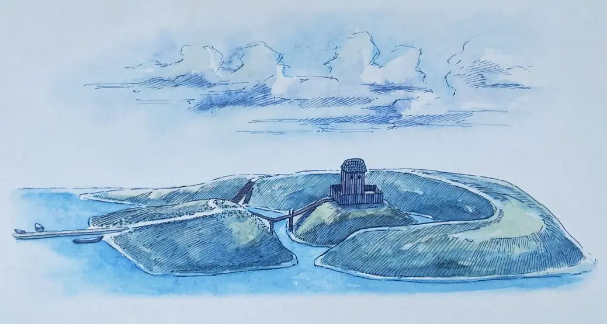
23.01.2025
Die Tage habe ich bei einigen Örtlichkeiten in Jütland Ergänzungen zu den Einträgen zum "Atlas Danicus" vorgenommen, bzw. Übersetzungen eingefügt. Aus dem Lateinischen wurden sie ins Dänische übersetzt in "Atlas Danicus VI D Ribe Stift, udgivet af Susannen Lykke Nielsen, 1987", worüber ich - Nichtlateiner - Übersetzungen ins Deutsche vornehmen konnte. Zu der Unterseite zum Runenstein von 12 - Horne - fand ich noch dieses Bildnis von Andreas Charles Teilman (*?.12.1723 - 27.07.1790)
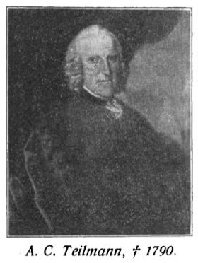
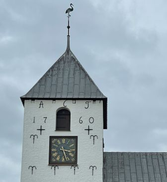
Bildquelle: Ravnholt, A - 1934 - Nørholm : Gaardens Historie gennem 500 aar - S. 14
dessen Initialen "ACT" noch heute an der Kirche von Horne prangen, der dort 1760 als Besitzer der Kirche Umbauarbeiten hatte vornehmen lassen.
20.01.2025
Einige neue Veröffentlichungen auf dem Buchsektor habe ich heute in die Literaturliste eingearbeitet.
19.01.2025
Heute habe ich nochmals einige Verbesserungen der Webseite zu Jütland - 6 - Hovslund vorgenommen, deren Notwendigkeit mir bei einer Durchsicht aufgefallen waren. So findet sich nun auch ein Foto der bislang fehlenden S. 738 zum "Atlas Danicus". Eine Übersetzung des dortigen lateinischen Textes habe ich aus dem dänischen vorgenommen - "Atlas Danicus VI D Ribe Stift, udgivet af Susannen Lykke Nielsen, 1987" - plus ein eigenes Foto der Zeichnung aus dem Original eingefügt. Dazu noch ein eigenes Foto der Inschrift zur Leserichtung - von unten nach oben - die ich hier aber einmal nach rechts gedreht habe.
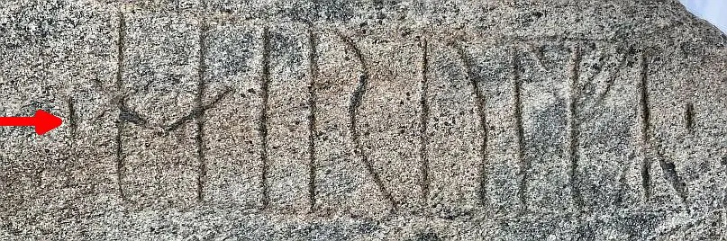
18.01.2025
Heute bekam ich über den Newsletter des Haithabu Museums mitgeteilt, dass vom 16.04.2025 bis zum 02.11.2025 in Schleswig auf der Museumsinsel im Museum für Kunst und Kulturgeschichte Schloss Gottorf, eine tolle Ausstellung mit dem Titel "Wikingerdämmerung Zeitenwende im Norden" auf über 1000 Quadratmetern Ausstellungsfläche mit herausragenden archäologischen Funden und aktuellen Forschungsergebnissen präsentiert wird. Zu sehen sein werden 1000 Jahre alte Exponate aus Haithabu, Schleswig und dem nördlichen Schleswig-Holstein sowie wertvolle Exponate aus Museen, Archiven und Bibliotheken Deutschlands, Skandinaviens, Englands und Frankreichs. Gezeigt wird zum Beispiel der gesamte Morsumer Schatzfund von 2017 mit der fantastischen Ringfibel im Zentrum, auch die silberne Prachtfibel von Sutton/Isle of Ely aus dem British Museum in London, die berühmten im 12. Jahrhundert entstandenen Gesta Danorum (eine der frühesten Geschichts-Beschreibungen Dänemarks) und eine der ersten Ausgaben des Tacitus aus dem 16. Jahrhundert.
Eine zentrale Rolle, nicht nur optisch, nimmt in der Ausstellung ein spektakuläres Objekt ein: der Nachdruck des Teppich von Bayeux, der als Weltdokumentenerbe im Original ausschließlich in Bayeux (Frankreich) zu sehen ist. Eigens für die Gottorfer Ausstellung wurde mit dem Museum in Bayeux eine Kooperation vereinbart, durch die nicht nur der Nachdruck des 68,38 Meter langen und 53 Zentimeter breiten Leinenteppichs, sondern auch wichtige Leihgaben möglich geworden sind. Das Original wird wegen Renovierungsarbeiten ab dem 01.09.2025 bis ca. Oktober 2027 nicht zu sehen sein! Ich hatte glücklicherweise bereits einmal das unvergessliche Erlebnis diesem unglaublich reich verzierten Stoffstreifen am 19.05.2016 gegenüber zu stehen. Online kann man sich den Teppich von Bayeux aber von zu Hause aus in aller Ruhe auf dieser Webseite in hochauflösender Qualität Stück für Stück anschauen.
Noch nie ist der Teppich von Bayeux in annähernd originaler Größe in Deutschland zu erleben gewesen. Die aufwendige und in ihrem Detailreichtum unübertroffene Wollstickerei, die Ende des 11. Jahrhunderts entstanden sein soll, zeigt die Vorgeschichte und den Verlauf der Schlacht von Hastings, in welcher im Oktober 1066 der Normannen-Herzog Wilhelm der Eroberer den englischen König Harold II. besiegt. Die Thronbesteigung Wilhelms im Jahr 1066 markiert zusammen mit der endgültigen Zerstörung Haithabus im selben Jahr für die Archäologie das Ende der Wikingerzeit.
Ein Ausstellungskatalog wird rechtzeitig vom Imhof Verlag für ca. 30 angeboten werden - 21 × 29,7 cm - ca. 256 Seiten - ca. 200 Abbildungen - Klappenbroschur - ISBN 978-3-7319-1479-2. Auf deren Webseite heißt es schon heute: "...Der Katalog bietet einen umfassenden Einblick in die Themenfelder der Ausstellung mit eindrucksvollen Bildern von bisher noch nie gezeigten archäologischen Funden. Von besonderem Wert ist die wissenschaftlich fundierte Untersuchung der Wikingerrezeption, mit der die Ausstellung in dieser Breite und Tiefe Neuland betritt."
16.01.2025
Heute mal etwas ganz anderes von mir. Auf der Suche nach einer geeigneten Tour für meine Wanderfreunde und mich stieß ich heute morgen auf Dublin - Hauptstadt, Regierungssitz und größte Stadt der Republik Irland - und die dortige Bibliothek des Trinity College Dublin. Dort wird das Book of Kells (Trinity College Dublin MS 5) verwahrt und ausgestellt. Es handelt sich um eine auf Pergament aus Kalbsleder hergestellte Handschrift.
Vermutlich um das Jahr 800 wurde das "Book of Kells" auf der kleinen schottischen Hebrideninsel Iona - Luftbild-360°-Panorama-Bild - in deren Kloster von Iona, durch kunstfertige Mönche gefertigt. Nach einem Wikingerangriff wurde das Book of Kells wohl im Jahr 806 nach Irland, in das Kloster in Kells in der Grafschaft Meath, in Sicherheit gebracht. Dort verblieb es offenbar bis 1654 und wechselte danach in das Trinity College Dublin. Die Entstehung, deren Ort und vieles mehr werden bis heute in der Fachwelt uneinheitlich diskutiert. Im 19. Jahrhundert wurde es (unfachmännisch) restauriert und dabei wurden wohl große Teile arg beschnitten, außerdem gingen leider um die 30 Seiten über die Jahre verloren. Glücklicherweise hat das Book of Kells aber im Großen und Ganzen die Verwirrungen durch die Jahrhunderte relativ unbeschadet überdauert.
Dieses exquisit illuminierte Manuskript, das die vier Evangelien in lateinischer Sprache beinhaltet, die auf dem Vulgata-Text basieren, den Hieronymus (*348/349 - 30.09.420) im Jahr 384 n. Chr. fertigstellte, vermischt mit Lesungen aus der früheren altlateinischen Übersetzung, wurde inzwischen digitalisiert und kann deshalb in aller Ruhe von zu Hause über hochauflösende Wiedergaben studiert werden. Ein Download einzelner Seiten oder des gesamten Werkes sind möglich. In der Bibliothek liegt die Handschrift in einem gesicherten Raum zwar offen auf, aber es sind halt immer nur zwei Seiten die betrachtet werden können, die dann alle 12 Wochen gewechselt werden. Allerdings gibt es nebenan in einem extra Gebäude eine visualiserte Form - Book of Kells Experience - des Book of Kells über die man quasi in die Handschrift eintauchen kann - sicherlich ein tolles Erlebnis!
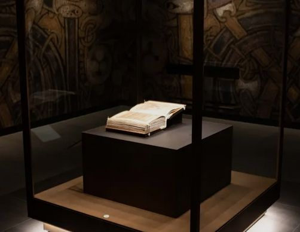
Bildquelle: Book of Kells ExperienceHier ein Beispiel - ein Ausschnitt der Seite "Fol. 2v" - das die bis heute ungebrochene Strahlkraft der unglaublichen Kunstfertigkeit und der verwendeten Farben wiedergibt.
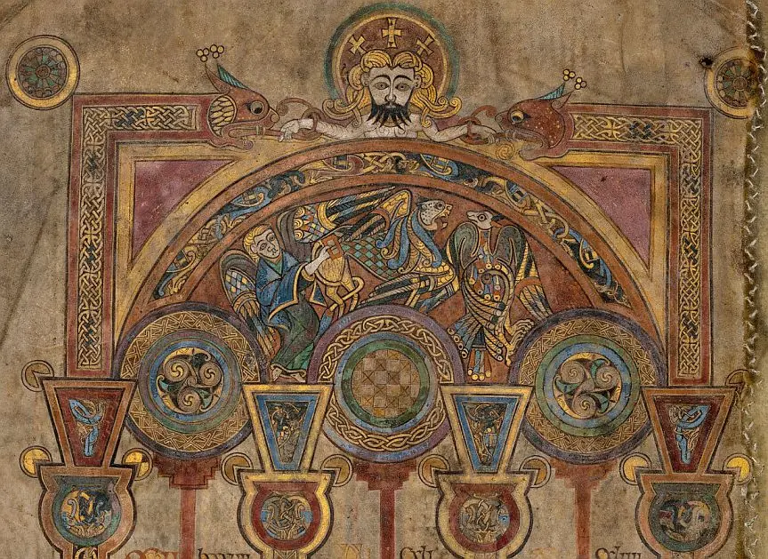
Bildquelle: Fol. 2vGlücklicherweise haben sich auch weitere herausragende Manuskripte mit tollen bildlichen Darstellungen aus frühen Epochen, die der "Wikingerzeit" zugerechnet werden, erhalten. Da fällt mir zum einen sofort dieses Bildnis einer Flotte von dänischen Wikingern in ihren Drachenschiffen ein, die im Jahr 869 von Häuptling Ingvar angeführt den König von Ostanglien, Edmund (der Märtyrer, *um 841 - 20.11.869), in einer Schlacht besiegen und ihn, da er nicht von seinem christlichen Glauben abschwören will, massiv foltern, mit unzähligen Pfeilen töten und letzlich auch noch enthaupten.
Bildquelle: MS M.736 fol. 9v / MS M.736 fol. 14r / MS M.736 fol. 14v
Diese tollen Buchmalereien und viele weitere zu dieser - aus heutiger Sicht - grausamen Geschichte findet sich heute in New York City in der "The Morgan Library & Museum" in der Handschrift mit der Titelbeschreibung "Ms. miscellany on the life of St. Edmund; written and illuminated in the Abbey of Bury St. Edmunds, ca. 1130" - MS.M 736. In deren Bibliothek findet sich eine Vielzahl von mittelaterlichen Manuskripten, die dankenswerter Weise als Digitalisate abgerufen, in aller Ruhe betrachtet, aber auch einzeln oder komplett heruntergeladen werden können.
Diese Geschichte wird auch in der Angelsächsischen Chronik zum Jahr "A. D. 870" angeführt. Eine erste Version der Chronik entstand vermutlich in den frühen 890er Jahren am Hof von König Alfred dem Großen von Wessex. Dort heißt es übersetzt: "In diesem Jahr ritt die Armee über Mercia nach East Anglia und schlug dort ihr Winterquartier in Thetford auf. Und im Winter kämpfte König Edmund mit ihnen; aber die Dänen errangen den Sieg und töteten den König. Daraufhin überrannten sie das ganze Land und zerstörten alle Klöster, zu denen sie kamen. Die Namen der Anführer, die den König töteten, waren Hingwar und Hubba. Zur gleichen Zeit kamen sie nach Medhamsted, brannten nieder, zerstörten und töteten den Abt und die Mönche und alles, was sie dort fanden. Sie haben dort eine solche Verwüstung angerichtet, dass ein Kloster, das zuvor sehr reich war, nun völlig zerstört wurde. Im selben Jahr starb Erzbischof Ceolnoth; und Ethered, Bischof von Whitshire, wurde zum Erzbischof von Canterbury gewählt." Zum Nachlesen der Passe zum 9. Jahrhundert - in englischer Sprache - zum Beispiel hier "Lillian Goldman Law Library".
Den Eintrag aus dem Jahr 877 kann man sich auf einer Webseite des Ashmolean Museum Oxford in der originalen Sprache der Zeit hier vorlesen lassen. In diesem Museum wird auch das "Alfred Jewel" aufbewahrt. Das Alfred-Juwel - Abmessungen: 6,2 x 3,1 x 1,3 cm (Höhe x Breite x Tiefe); 5,2 cm (Länge); 3,1 cm max. (Breite) - ist ein Meisterwerk der Goldschmiedekunst, das um eine tropfenförmige Scheibe Bergkristall herum geformt ist. Die Inschrift: AELFRED MEC HEHT GEWYRCAN Alfred befahl, mich anzufertigen verbindet das Juwel mit König Alfred der Große (*848/849 - 26.11.899) und macht es zu einer der bedeutsamsten königlichen Reliquien. Er war es, der mit seiner Armee im Jahre 878 die Dänen empfindlich schlug. Sein geschlagener Gegner König Guthrum ließ sich daraufhin taufen und zog sich in sein Königreich Ostanglien zurück. Die große Krisenzeit war zumindest für Wessex überwunden.
Der Original Eintrag zum Jahr 877 - A.D. DCCCLXXVII - in der Ausgabe "Cambridge, Corpus Christi College, MS 173: The Parker Chronicle" der Stanford University sollte der hier sein:
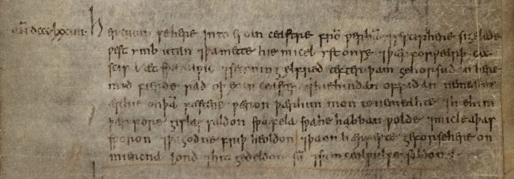
Lizenz: CC BY-NC 4.0"Her cuom se here into Escanceastre from Werham, se sciphere sigelede west ymbutan, þa mette hie micel yst on sæ þær forwearþ hundtwelftig scipa æt Swanawic. se cyning ælfred æfter þam gehorsudan here mid fierde rad oþ Exanceaster, hie hindan ofridan ne meahte, ær hie on þam fæstene wæron, þær him mon to ne meahte. hie him þær foregislas saldon, swa fela swa he habban wolde, micle aþas sworon, þa godne friþ heoldon. þa on hærfæste gefor se here on Miercna lond, hit gedældon sum, sum Ceolwulfe saldon."
Übersetzung: Hier drang die Stoßarmee von Wareham nach Exeter ein, und die Schiffarmee segelte Richtung Westen, bis sie auf See in einen schweren Sturm geriet und bei Swanage 120 Schiffe verloren gingen. Und König Alfred ritt mit der Armee hinter der berittenen Armee bis nach Exeter her und konnte sie erst einholen, als sie in der Festung waren, wo sie nicht zu erreichen waren. Und dort überließen sie ihm so viele wichtige Geiseln, wie er wollte, und schworen große Eide und hielten dann an einem guten Frieden fest. Und dann, zur Erntezeit drang das Raubheer in das Land Mercia ein, und einen Teil davon teilten sie auf, und einen Teil überließen sie Ceolwulf.
Quelle: Anglo-Saxon Chronicles from 877 AD
13.01.2025
Ich bastle immer noch an der Seite zu Jütland - 82 - Sønder Vilstrup herum und sollte jetzt aber wirklich alle mir bekannten Informationen eingearbeitet haben. Danken möchte ich auch hier noch einmal ausdrücklich dem Antiqvarisk-Topografisk Arkiv in Kopenhagen und ihrem hilfsbereiten Mitarbeiter - Tausend Dank Dánial! Verweisen kann ich an der Stelle einmal auf Hans de Hofman (*10.07.1713 - 03.02.1793, dänischer Politiker und historischer Sammler).
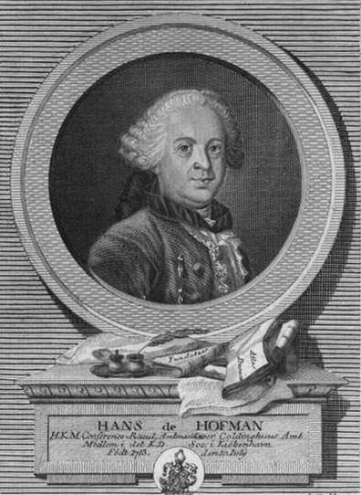
Bildquelle: Wikipedia - Lizenz: Public DomainHofman war seit 1759 Oberbürgermeister von Fredericia und wurde im Jahre 1773 der letzte Bezirksgouverneur von Koldinghus. Er war auch Schwager von Erik Pontoppidan. Nach dessen Tod im Jahre 1764 hat er den Teil 4-6 des "Den danske Atlas" zu Ende geführt (1768-74). Erwähnt sei noch, dass Hofman zwischen 1755 und 1780 die 11-bändige Reihe "Samlinger af Publique og Private Stiftelser, Fundationer og Gavebreve, som Forefindes udi Danmark og Norge" veröffentlichte. Deren Inhalt - jeweils zwischen ca. 450 und 800 Seiten! - basiert auf einer Vielzahl von Berichten von Pfarrern (Præsteindberetninger) aus dem Jahr 1754. Nach meinen Recherchen sind nun (Stand 13.01.2025) alle 11 Bände über die Königliche Bibliothek in Kopenhagen digitalisiert online verfügbar. Zuvor hatte ich auf diese GoogleBooks Digitalisate verwiesen: Band I / Band III / Band IIII / Band V / Band VI / Band VIII / Band IX / Band X (mit Register zu den Bistümern Aarhus, Viborg, Aalborg und Ribe).
Band I - 1755 / Band II - 1756 / Band III - 1758 / Band IIII - 1759 / Band V - 1760 / Band VI - 1760 / Band VII - 1761 / Band VIII - 1762 / Band IX - 1763 / Band X - 1765 / Band XI - 1780
Einige wenige Stiche finden sich immer mal wieder, wie hier im Band I, Seite 346, Tycho Brahe (*14.12.1546 - 24.10.1601, dänischer Astronom) mit seinem Weltbild und dem Runden Turm (Rundetårn) in Kopenhagen.
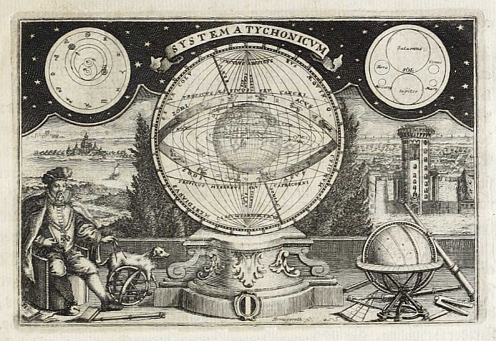
Wie war bitte so eine Leistung in der damaligen Zeit - kein Computer, kein Internet, analoge Drucktechnik usw. - überhaupt möglich? Für mich eine unvorstellbare Fleißarbeit!
07./09.01.2025
Im Hinblick auf den Runenstein von Jütland - 82 - Sønder Vilstrup konnte ich heute durch Internetrecherchen zur Person des Kaplan Jens Johan Garnæs (*28.08.1772 - 14.02.1817)
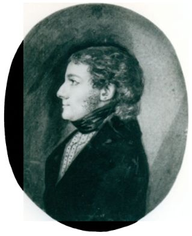
Bildquelle: Jens Johan Garnæs : 1772 - 1817 - Arne Garnæs Petersen - 1967noch dieses Bildnis und seine kompletten Personalien auftreiben. Er hat mit Datum vom 24.12.1808 einen Bericht an die erst 1807 gegründete "Oldsagskommission" nach Kopenhagen gesandt - Vorläufer des heutigen Nationalmuseum in Kopenhagen. Darin führt er aus, dass sich die originalen Aufzeichnungen auf dem Landerupgaard unter Glas gerahmt beim Eigentümer Berthel Ebbesen befanden. Damit meint er dieses Dokument von dem Isländer namens Aosmann Isfron vom 09. Dezember 1799, der als Buchdrucker in Vejle tätig war.
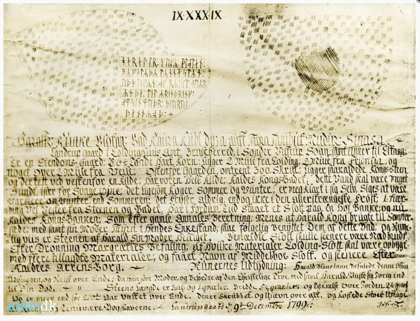
Darüber hat Garnæs seine Wiedergabe der Runen abgezeichnet.
 siehe:
Danske Præsters Indberetninger til Oldsagskommissionen af 1807,
Vest- og
Sydjylland, S. 34
siehe:
Danske Præsters Indberetninger til Oldsagskommissionen af 1807,
Vest- og
Sydjylland, S. 34
Weiter führt er aus: "Der Runenstein war, als ich 1804 in die Gegend kam, bereits von dem Gutsbesitzer Peder Madsen aus Vilstrup zerkleinert worden, um als Zaun verwendet zu werden!" Da ist vermutlich von Peder Madsen (*1752 - 28.05.1823, Besitzer des Gøttrupgaard) die Rede - siehe Slægten Winter fra Tislund i Sønderjyyland - S. 48 und 113.
Hier einmal ein paar Informationen zu den "Danske Præsters Indberetninger til Oldsagskommissionen af 1807". Quelle: Christian Adamsen, Vivi Jensen (Red.), Danske Præsters indberetninger til oldsagskommissionen av 1807 (Jutta Kneisel). (2004). Praehistorische Zeitschrift, 79(1).
Im Jahre 1807 beschloß die gerade erst ins Leben gerufene Altertumskommission Den kongelige Commission til Oldsagers Opbevaring - Vorläufer des heutigen Nationalmuseum in Kopenhagen - unter den maßgeblichen Bemühungen von Rasmus Nyerup (*12.03.1759 - 28.06.1829, dänischer Literaturhistoriker, Philologe, Folklorist und Bibliothekar)
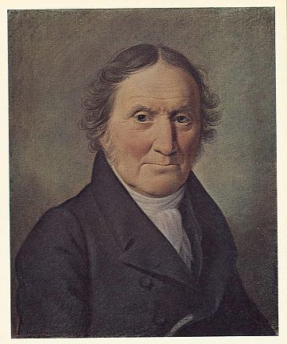
Bildquelle: 1827 aus Kunstsammlung abfotografiert - Det Kgl. Biblioteks billedsamling - Lizenz: Public Domain und
des späteren Bischofs von
Seeland,
Bischof Friedrich Münter (*14. Oktober 1761 in Gotha - 09.
April 1830 in Kopenhagen, auch ein anerkannter Philologe und Archäologe)
 Bildquelle: Det
Kgl. Biblioteks billedsamling - Lizenz:
Public Domain
Bildquelle: Det
Kgl. Biblioteks billedsamling - Lizenz:
Public Domain
eine Bestandsaufnahme der vorhandenen Altertümer. Es war die Zeit der nationalen und romantischen Strömungen, die nicht zuletzt durch die England-Kriege bestärkt das Interesse an der dänischen Vergangenheit weckten und bestimmend für die Ausprägung eines nationalen Bewußtseins der dänischen Bevölkerung wurden. Bei der Erfassung der archäologischen und historischen Altertümer griff man auf ein bereits erprobtes Mittel den Klerus zurück. Die Priester galten zwar nicht gerade als der verlängerte Arm der Staatsmacht, so doch als ihr verlängertes Auge. Diese Vorgehensweise war so neu nicht und fand bereits früher, beispielsweise schon 1623-25 für Ole Worm (*13.05.1588 - 31.08.1654, Arzt, Universalgelehrter und der Begründer der Runologie)
 Bildquelle:
Digitale Sammlung der Königlichen Bibliothek Kopenhagen -
Lizenz:
Public Domain
Bildquelle:
Digitale Sammlung der Königlichen Bibliothek Kopenhagen -
Lizenz:
Public Domain
für sein Standardwerk "Danicorum Monumentorum Libri Sex, Hafniae, 1643" - siehe: Præsteindberetningerne til Ole Worm I - Ålborg og Ribe Stifter 1625-42 / Præsteindberetningerne til Ole Worm II - Århus, Fyns og Lunde Stifter 1623-25 /
Auch Peder Hansen Resen (*17.06.1625 - 01.06.1688, Jurist und Historiker)
 Bildquelle:
Wikipedia - Lizenz:
Public Domain
Bildquelle:
Wikipedia - Lizenz:
Public Domain
nutzte diese Möglichkeit der Erkenntnisgewinnung 1687 und die Rückmeldungen der Pfarrer für sein Werk "Atlas Danicus".
Weiterhin war es 1763 Erik Pontoppidan (der Jüngere, *03.09.1698 - 20.12.1764, dänischer Theologe, Prediger, Historiker und Autor)
 Bildquelle:
Wikipedia - Lizenz:
Public Domain
Bildquelle:
Wikipedia - Lizenz:
Public Domain
der die über sein Rundschreiben erlangten Informationen für sein 7-bändiges Werk Den Danske Atlas verwendete. Auf diese Weise schien es möglich, sich einen schnellen Überblick über den gegenwärtigen Stand der archäologischen und historischen Denkmäler zu verschaffen. Auf der Grundlage eines Fragenkatalogs wurden 1808 alle Pfarrer des Landes (einschließlich des damals dänischen Schleswig) gebeten, eine Liste der in ihren Gemeinden befindlichen Altertümer zu erstellen. Die insgesamt zwölf Punkte des Fragenkatalogs betrafen: Grabhügel/Großsteingräber, heidnische Altäre, Tingstätten, Bautasteine und Felsritzungen, Runensteine, Inschriften in Runen- oder lateinischer Schrift, Bilder aus der Zeit vor der Reformation, Zeugnisse des katholischen Kults, Spuren alter Siedlungen. Weitere Fragen zielten auf ergrabene Funde aus Hügeln, private Sammlungen von Altertümern sowie Sagen und Berichte rund um die alten Fundstellen ab. Siehe auch Præsteindberetninger til biskop J. Bloch 1766 - 1769 - Brusk herred - Eltang og Sønder Vilstrup Sogn - Unterschrieben Stenderup Pfarrhof den 10. Februar 1768 von J. H. Seidelin.
29.12.2024
Heute habe ich per Zufall eine schwedische Webseite mit dem Titel (übersetzt) "Die erste Runenreise von Johannes Bureus" entdeckt, die auch erst am 10.12.2024 publiziert wurde (über: Riksantikvarieämbetets K-blogg / K-Blog des schwedischen Denkmalamts). Der schwedische Runologe Magnus Kallström (*1964) schreibt dort über den ersten nationalen Antiquar Schwedens und königlichen Bibliothekar Johannes Thomae Agrivillensis Bureus, genannt Johan Bure, (*15./25.03.1568 - 22.10.1652, schwedischer Runenforscher, Mystiker, Königlicher Hofarchivar und Schriftsteller) und visualisiert dessen Reiseroute zu den einzelnen Runendenkmälern.
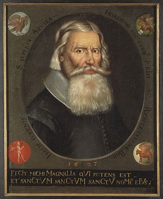
Bildquelle: Wikipedia - Lizenz: Public Domain - Bildnis von 1627Dort heißt es (übersetzt): "Dieser Stein hat mir 1594 zum ersten Mal das mühelose Lesen von Runen beigebracht. Dies sind die bekannten Worte, die Johannes Bureus oder Johan Bure, wie er eigentlich hieß beim Zeichnen des Runensteins niederschrieb, der sich damals im Eingang der Waffenkammer in der Riddarholmskirche in Stockholm befand." Sein frühestes Werk mit dem Titel "Runakenslanes läraspån" stammt aus dem Jahr 1599, das bereits etwas über die Jelling Monumente beinhalten soll, da es in der Literaturliste zu Jelling auftaucht. (Bislang mehrfach drüber geschaut - nix entdeckt). Eine weitere interessante Seite (in schwedischer Sprache), die am 26.08.2024 veröffentlicht wurde beschäftigt sich mit dem Thema (übersetzt): "...Johan Bure, Schwedens erster nationaler Antiquar und königlicher Bibliothekar, sammelte eine Fülle von Notizen in einem dicken kleinen Band namens Sumlen. Ein Name, den die aktuellen Besucher der Königlichen Bibliothek vielleicht vor allem mit dem heutigen Mittagessen verbinden. Was bietet das Manuskript, das dem Restaurant der Bibliothek seinen Namen gab?"
Seine handschriftlichen Aufzeichnungen haben sich glücklicherweise bewahrt und eine Übersicht mit verschiedenen kosten- und urheberrechtsfreien Download Optionen finden sich auf dieser Webseite. Ich habe schon lang vergeblich nach der Person Johan Bure und seinen Werken im Internet geschaut und da gibt es jetzt auf einmal alles vollumfänglich!
Johan Bure hat sich also noch vor Ole Worm (*13.05.1588 - 31.08.1654, Arzt, Universalgelehrter und der Begründer der Runologie)
Bildquelle:
Digitale Sammlung der Königlichen Bibliothek Kopenhagen -
Lizenz:
Public Domain
mit Runendenkmälern beschäftigt. Digitalisate von seinen frühen Werken sind auch hier verfügbar: Runa ABC boken von 1611 / Annotations in Calendars etc. von 1620-29 / Collectanea Runica von ? / Runa Häfd or Monumenta Runica spätes 16. Jh. /
Auf der Webseite "manuscripta.se A Digital Catalogue of Medieval and Early Modern Manuscripts in Sweden", über die ältere Handschriften mehrerer verschiedener schwedischer Bibliotheken präsentiert werden, habe ich gerade weitere tolle uralte Werke, die sich mit Runeninschriften, deren Zeichnungen usw. beschäftigen entdeckt! So z.B. "Collection of Drawings by Nescher" - 410 × 275 mm - Schweden vor 1795 entstanden / P. M. A. Säve (*19.04.1811 - 10.11.1887, schwedischer Lehrer und Volkskundler), Drawings of Ancient Swedish Monuments from Västergötland, Östergötland and Gotland / Johan Peringskiöld (*06.10.1654 - 24.03.1720, schwedischer Antiquar), Monumenta Sveo-Gothorum. 4. Fjärdhundra. Västmanland, Dalarna. Da kann man sicherlich wieder etliches an Zeit investieren, wenn man sich dort - inzwischen 645 Werke digitalisiert - nur einmal umschauen möchte.
Außerdem fand ich bei diesen Recherchen auch diesen Hinweis: "Im Herbst 2024 startet ein Forschungs- und Digitalisierungsprojekt zur Geschichte des Nationalen schwedischen Denkmalamtes und der Academy of Letters. Im Laufe von zwei Jahren werden einzigartige und fragile Archivdokumente digitalisiert, die die älteste Geschichte der Erhaltung des schwedischen Kulturerbes widerspiegeln. Im Rahmen des von der Schwedischen Akademie der Wissenschaften geförderten Projekts werden auch die entsprechenden Sammlungen erforscht. Die aktuellen Sammlungen werden in den Archiven des Nationalen schwedischen Denkmalamtes und der Königlichen Bibliothek aufbewahrt. Hintergrund des Projektes ist, dass die Sammlungen stark nachgefragt, zugleich aber fragil und schwer zugänglich sind, weshalb eine Digitalisierung sowohl aus konservatorischen Gründen als auch zur Erhöhung ihrer Zugänglichkeit notwendig ist. Ziel des Projektes ist es, die in den einzelnen Archiven vorhandenen Archivalien digital zugänglich zu machen und gleichzeitig eine wissenschaftliche Untersuchung dieser Materialien durchzuführen."
Unter dem Titel "Bureus, den svenska grammatikens fader " von Hjalmar Axel Lindroth (*06.02.1878 - 11.09.1947, schwedischer Sprachforscher) - 1911/12 - kann man seine Geschichte nachlesen.
Noch vor seinem Standardwerk "Danicorum Monumentorum Libri Sex, Hafniae, 1643" hat Ole Worm im Jahr 1636 das Buch "Runer seu Danica literatura antiquissima, vulgò Gothica dicta luci reddita" herausgebracht. Auf der S. 55 kommt er kurz zu "... Regis Gormonis & Haraldi monumentum quod Jellinga..."
Bureus berichtet mit seinem Werk mit dem Titel "Den svenska runeskriften uti literatura danica antiquissima [ms]" über Worms Arbeit. Das Entstehungsjahr dieser Handschrift wird mit "vermutlich 1641" angegeben. In der umfangreichen Literaturliste zu Jelling, die im Rahmen des Jellingprojektet erstellt wurde und eigentlich alles beinhaltet, was etwas mit Jelling zu tun hat, taucht die Handschrift komischerweise aber nicht auf.
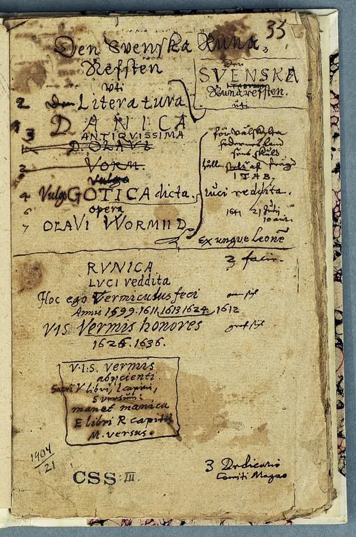
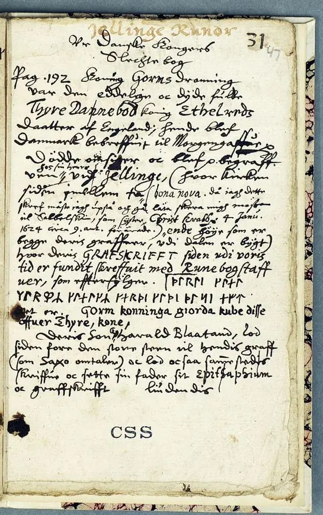
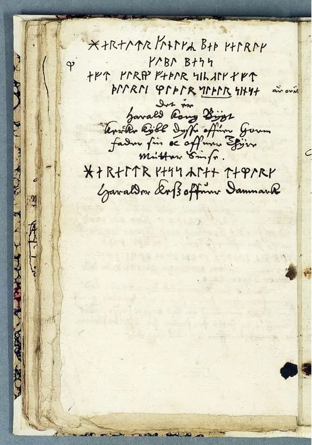
27.12.2024
Zu Jütland - 30 - Suldrup bekam ich heute von Niels Nørgaard Nielsen, dem Leiter des Lokalhistorisk Arkiv for den tidligere Støvring Kommune, mit dem ich die Tage im Austausch zur Verifizierung der Person des "Lehrer Nissen" war, dieses sw Foto der Kirche von Suldrup übermittelt, das von ihm datiert wird auf "nach 1895 und vor 1913". Der Runenstein steht nämlich schon auf seinem heutigen Standort. Siehe auch der zugehörige Artikel "Kirkegårde og gravminder gennem tiden" in der Infoschrift des Archivs "Hanen, Efteraarsnummer 2011, Nr. 73" ab der S. 9.
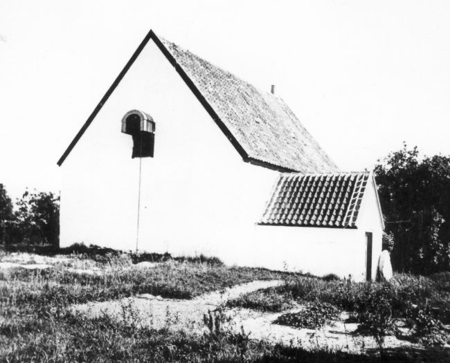
26.12.2024
Die letzten Tage habe ich mich nochmals mit dem Runenstein in Jütland - 30 - Suldrup auseinandergesetzt um die Identität der Person des Lehrers Nissen, der den Runenstein entdeckte, zu klären. Es handelt sich auch hier wieder um den geschichtsinteressierten Lehrer Jacob Wilken Nissen aus Randers (*02.10.1835 - im Geburtsregister eingetragen als Jacob Wilkesen Nissen - 29.10.1902, Lehrer in Ramten 1859 bis 1895 - link-LIVES) , der auch schon bei den Runensteinen von Ydby/Flarup und von Rimsø in Erscheinung getreten ist. Er befand sich auf einer Runenstein Rundreise in Nordjütland, als er diesen Runenstein entdeckte und den Fund mit Schreiben vom 24.06.1895 unverzüglich schriftlich gegenüber dem Nationalmuseum in Kopenhagen anzeigte.
 Bildquelle:
Det Kgl. Biblioteks billedsamling (von mir zugeschnitten)
- Lizenz:
Public Domain - Foto von 1884
oder 1885
Bildquelle:
Det Kgl. Biblioteks billedsamling (von mir zugeschnitten)
- Lizenz:
Public Domain - Foto von 1884
oder 1885
Literaturhinweis: Jacob Wilken Nissen - En sønderjydsk Folkemindesamler - von Wilken Jacobsen - Haderslev - in: Sønderjydsk Maanedsskrift, Nr. 1, 16. Jahrgang, 1. Juli 1939, S. 1-5
20.12.2024
Heute Abend habe ich noch etliche Unterseiten in Jütland mit Luftfotos aus Skrafoto überarbeitet.
18.12.2024
Die Tage ging es nochmals in Jütland zu - 70 - Hammel / 71 - Sporup / 72 - Sjelle / G - Århus / H - Århus - das MOMU vorerst ausgelassen / 73 - Sønder Vissing nach 74 - Samsø. Dann sollte es mir vielleicht noch gelingen in 2024 Jütland abschließen zu können, d.h. bis - 82 - Sønder Vilstrup zu kommen.
15.12.2024
So einfach es war die (extrem ausführlichen) Informationen zum Pfarrer Frederik Wilhjelm im Internet aufzufinden - siehe unten zum Runenstein von Rimsø - so ungemein schwierig war es beim Kaplan Erik Begtrup Holst (*16.11.1833 - 16.01.1871, zw. 1861-71 Pfarrer in Lyngby und Albøge - link-LIVES), der 1868 der Entdecker des Runensteins von Jütland - 69 - Kolind war. Zu seiner Person habe ich im Internet echt ewig gesucht, bis ich neben einem Bildnis, das ich über die Trøst-Hansens sognekort - Nr. 3140 schon hatte, auch endlich seinen vollständigen Namen und sein Geburts-/Sterbedatum fand. Dafür fand ich dann aber über die immer wieder hilfreiche Datenbank "dk-gravsten.dk" Fotos zu seinem Grab-/Gedenkstein auf dem Kirchhof von Lyngby (Ly-194 und Ly_194a), der ihm dort von Freunden der Gemeinde errichtet wurde.
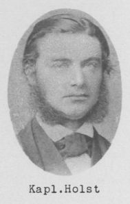
Bildquelle: Trøst-Hansens sognekort - Nr. 3140 - Lizenz: Public DomainDer Kaplan durfte leider nur etwas über 38 Jahre alt werden. Er hat am 19.12.1869 einen Brief mit dieser Zeichnung des Runensteins an Prof. P. G. Thorsen (*07.08.1811 - 06.05.1883, Bibliothekar, Runenforscher und Historiker - link-LIVES) gesandt.
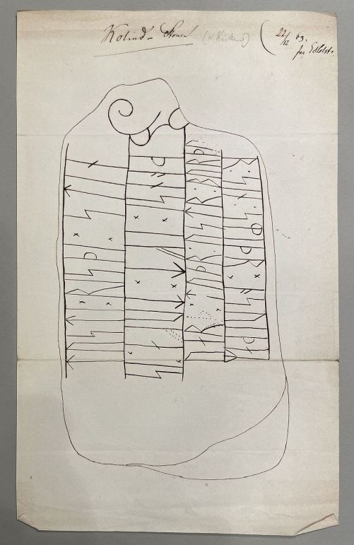
Diese Zeichnung fand ich bei meinem Besuch am 28.09.2022 in der Königlichen Bibliothek in Kopenhagen in der Hinterlassenschaft von P. G. Thorsen in der Pappschachtel mit der Nummer 6, worüber ich diese Fotografie anfertigen durfte
12.12.2024
Im Zusammenhang mit der Überarbeitung des Runensteins in Jütland - 68 - Rimsø habe ich mir nochmals den sehr interessanten Podcast - WDR Zeitzeichen. 16.01.2020. 14:41 Min. - verfügbar bis 13.01.2099 - WDR 5 - zum 225. Geburtstag von Carl Christian Rafn (*16.01.1795 - 20.10.1864, Altertumsforscher - link LIVES) angehört. Der Autor lässt darin immer mal wieder Prof. Dr. Dr. h.c. Rudolf Simek zu Wort kommen. Unbedingt empfehlenswert!
 Bildquelle: Zeichner
Magnus Petersen -
Det Kgl. Biblioteks billedsamling - Lizenz:
Public Domain
Bildquelle: Zeichner
Magnus Petersen -
Det Kgl. Biblioteks billedsamling - Lizenz:
Public Domain
Zu dem Runenstein von Rimsø wollte ich eigentlich nur einige wenige Ergänzungen im Hinblick auf die Bildnisse der relevanten Personen vornehmen. Aber bei meinen Recherchen stieß ich doch noch auf zahlreiche, bis dato selbst mir unbekannte Erkenntnisse und Personen, worüber ich dann doch noch einige Stunden daran saß. Der Runenstein wurde am Mittwoch, 02.08.1889, an seinem Platz errichtet, wo er noch heute steht. Der damals in Rimsø amtierende Pfarrer Frederik Wilhjelm (*08.10.1852 - 23.09.1938, Pfarrer in Rimsø ab 30.06.1884 bis 07.09.1891, danach in der Vorup Kirche bis 1916 - link-LIVES),
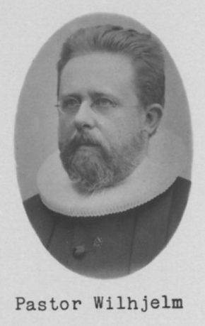
Bildquelle: Trøst-Hansens sognekort - Nr. 3109 - Lizenz: Public Domainberichtet darüber: "Der Runenstein lag neben der südlichen Kirchentür. Es wurde vom Gutsherrn Benzon von dort entfernt und war nach mehreren Jahren des Liegens vor dem Grabhügel im Kirchhof, am 2. August 1889, im Auftrag der Direktion für die Erhaltung antiquarischer Denkmäler, errichtet worden. Am Morgen traf sich ein Großteil der Männer der Gemeinde, die ihn auf Rollen zum angedachten Standort zogen. Mittags stand er bereits, doch dann riss das Seil, das ihn festhielt, und er fiel wieder um. Erst am Abend stand er nach anstrengender Arbeit wieder aufrecht. In den Fuß, der am nächsten Tag gegossen wurde, wurde eine Geschichte in die Wand eingebaut. Lehrer Nissen aus Ramten leitete die Arbeit." - Quelle: Grenaa Egnsarkiv.
Zu der Person des Pfarrers stieß ich im Internet auf die Datenbank von Christian Juul Mikkelsen - Chris's Slægtsdatabase - die über ihn so ziemlich alles an Informationen bereit hält was man überhaupt nur so erheben kann - Geburt / Taufe / Konfirmation / Bildungsabschluss / Kirchliche Trauung / zig Volkszählungen / Tod und Bestattung. Alles mit entsprechenden Verweisen zu den Informationsquellen. So findet sich z.B. zu seinem Tod in dem vom Rigsarkivet digitalisierten "Søllerød Sogns Kirkebog (KM) 1924-1941 (D)" auf der Seite 121 unter Punkt 14 der entsprechende Eintrag:
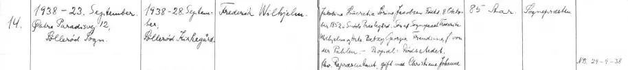
Eine so ausführliche Datenübersicht zu einer (verstorbenen) Person habe ich bislang noch nirgends gesehen!
10.12.2024
Heute bin ich bis zu Jütland - 67 - Øster Alling gekommen. Da konnte ich noch Informationen zu Pastor Jørgen Tørsleff (*05.09.1804 - 13.02.1877, Pfarrer in Vester und Øster Alling ab 08.08.1837 bis 22.07.1858 - link-LIVES)
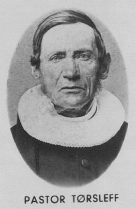
Bildquelle: Trøst-Hansens sognekort - Nr. 3059 - Lizenz: Public Domainaufzustöbern und einpflegen. Rasmus Henrik Kruse (*07.08.1796 - 30.05.1877, Landschaftsmaler - link-LIVES) hatte den Runenstein bei seinen Studien im Jahr 1856 noch in der Fundlage - vor der Kirchentür - angetroffen und daraufhin mit dem Pastor die Herausnahme und Verbringung / Aufstellung im Waffenhaus der Kirche von Øster Alling ausgehandelt.
Im Ort zuvor Jütland - 66 - Stenalt konnte ich zu dem jahrhundertelang verschwundenen Runenstein auch noch einige Erkenntnisse über das Internet erlangen. Erst im Jahr 1913 fand man nämlich ein größeres Bruchstück des Runensteins in einem kleinen, mit Steinen ausgekleideten Graben im Hof des 1865 erbauten des Neusiedlerhofs Christianelund, der zum Gut Stenalt gehörte. Hofjägermeister Jørgen Christian Julius Vilhelm Bruun (*07.08.1858 - 21.05.1934, Gutsbesitzer von Stenalt - link-LIVES)
 Bildquelle:
Digitale
Sammlung der Königlichen Bibliothek Kopenhagen - Lizenz:
Public Domain - Fotograf: Peter Elfelt - um 1911
Bildquelle:
Digitale
Sammlung der Königlichen Bibliothek Kopenhagen - Lizenz:
Public Domain - Fotograf: Peter Elfelt - um 1911
ließ ihn daraufhin im Park des Hofgutes aufstellen.
03.12.2024
Es geht weiter voran, so dass ich gerade zu Jütland - 65 - Virring abschließen konnte. Hier konnte ich u.a. noch den vollständigen Namen und die Lebensdaten des Entdeckers des Runensteins - Lehrer Niels Christian Ring (*24.05.1828 - 08.04.1897 - link-LIVES) aus Hørning - im Internet ermitteln.
 Bildquelle:
Trøst-Hansens sognekort -
Nr.
3156 -
Lizenz:
Public Domain
Bildquelle:
Trøst-Hansens sognekort -
Nr.
3156 -
Lizenz:
Public Domain
27.11.2024
Zu dem Runenstein 1 in Jütland - 28 - Gunderup konnte ich heute dieses Bildnis von Carl Peter Neergaard (*05.07.1869 - 30.04.1946; Museumsinspektor, Archäologe - link-LIVES)
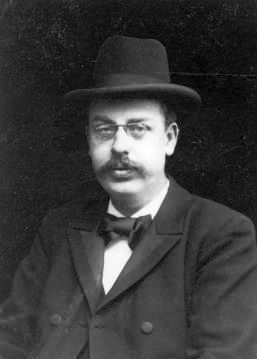
Bildquelle: Furesø Museer - Lizenz: Public Domaineinpflegen, das ich auf Anfrage von der Archivarin Cecilie Brøndum Rosenblad, Furesø Museer, per E-Mail übermittelt bekam. Dieses Bildnis ist in anderem Zusammenhang bei arkiv.dk eingestellt. Neergaard wurde vom damaligen Direktor des Nationalmuseum in Kopenhagen, Sophus Müller (*24.05.1846 - 23.02.1934, dänischer Prähistoriker) im August 1898 nach Gunderup geschickt, um den Grabhügel zu untersuchen, auf dem dieser Runenstein einst gestanden haben soll. Zuvor war Ludv. F. A. Wimmer (*07.02.1839 - 29.04.1920, Philologe und Runenforscher) am 09.12.1897 von dem Grundbesitzer Claus Johannsen (*26.08.1841 - 20.12.1931) aus Vårst, über die genaue Lage des Grabhügels informiert worden, die in Vergessenheit geraten war, was Wimmer in einem Vortrag öffentlich beklagt hatte.
26.11.2024
Heute bekam ich vom Gørlev Lokalhistoriske Arkiv auf Nachfrage ein Bildnis und die Geburts-/Sterbedaten des Maurermeister, Laurids Peder Christiansen (*21.01.1877 - 14.07.1948) übermittelt.
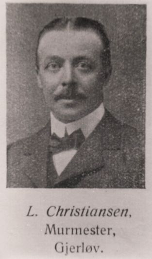
Bildquelle: Gørlev Lokalhistoriske Arkiv - Lizenz: Public DomainEr hat den Runenstein 1 von Seeland - 93 - Gørlev bei Restaurierungsarbeiten in der Gørlev Kirche entdeckt und letztlich auch für die Nachwelt gerettet. Der örtliche Pfarrer hatte ihm nach seiner Meldung aufgetragen ungeachtet der Runenzeichen Zement über den Stein zu gießen, um eine Treppenstufe anzulegen. Tags darauf - Sonntag, 08. Mai 1921 - sprach er dies gegenüber dem Kassierer der Gørlev Zuckerfabrik, D. Møller, an, der sich glücklicherweise sofort einmischte und das Nationalmuseum in Kopenhagen unterrichtete. Zu Herrn Møller gibt es laut Archiv in Gørlev leider keine weiterführenden Informationen / kein Bildnis.
24.11.2024
Dieses tolle Foto aus dem Jahr 1924, aufgenommen von Poul Nørlund (*04.11.1888 - 26.05.1951, dänischer Kultur- und Kunsthistoriker sowie Mittelalterarchäologe - von 1938 bis 1951 Direktor des Dänischen Nationalmuseums), zeigt die beiden Runensteine neben dem Eingang der Skjern Kirche, deren Webseite ich heute abschließen konnte.
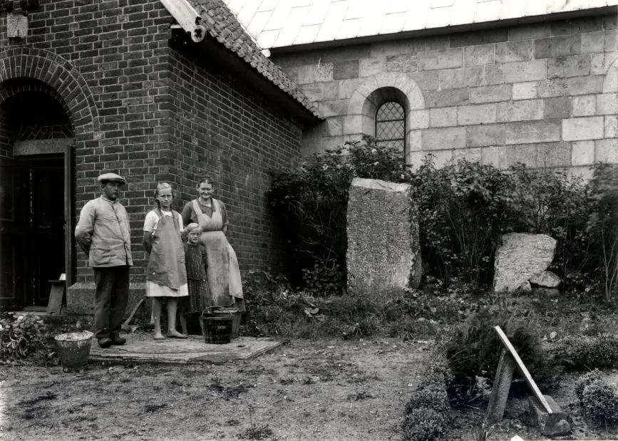
Quelle: Digitale Datenbank des Nationalmuseums Kopenhagen - Lizenz: CC-BY-SA